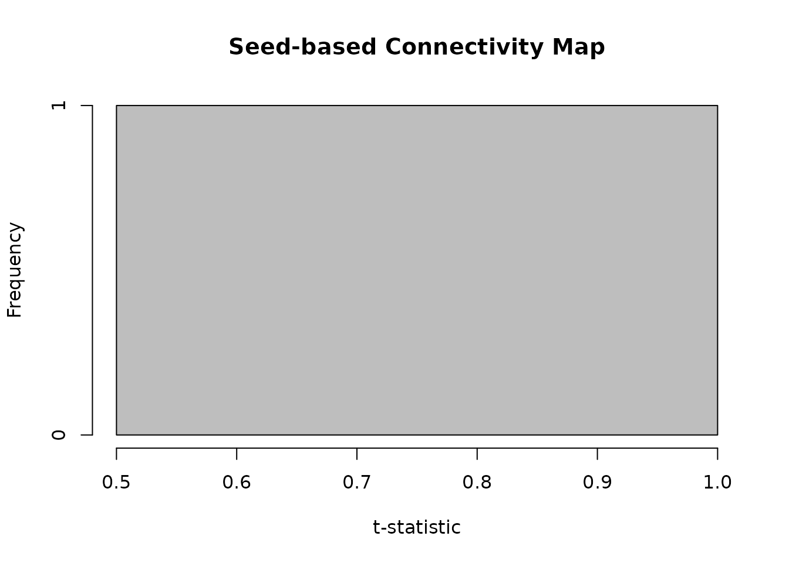

vignettes/functional_connectivity.Rmd
functional_connectivity.Rmdtitle: “Seed-based Functional Connectivity Analysis” author: “Bradley R. Buchsbaum” date: “2025-09-24” output: rmarkdown::html_vignette vignette: > % % % —
Overview
Seed-based functional connectivity analysis is a fundamental technique in fMRI research for identifying brain regions that show correlated activity with a specific region of interest (the “seed”). This vignette demonstrates how to perform seed-based connectivity analysis using fmrireg’s flexible design matrix and GLM framework.
The approach we’ll take treats the seed time series as an experimental regressor rather than computing simple correlations. This allows us to control for nuisance variables like scanner drift and motion parameters while estimating connectivity strength. The resulting t-statistics provide a connectivity map showing which voxels have activity significantly related to the seed region after accounting for confounds.
To illustrate the method clearly, we’ll work with simulated data where we know the ground truth. We’ll create a dataset with a hidden network of voxels that share a common signal with our seed region, then recover this network using our connectivity analysis.
Creating a Test Dataset with Known Connectivity
First, we’ll generate a simulated fMRI dataset where we control which voxels are functionally connected. This allows us to validate our analysis method since we know the true connectivity pattern.
set.seed(42)
# Set up the temporal parameters for our scan
Tlen <- 180 # 180 time points
TR <- 2 # 2-second repetition time
# Generate baseline fMRI data with realistic noise properties
sim <- simulate_fmri_matrix(
n = 256, # number of voxels
total_time = Tlen * TR,
TR = TR,
n_events = 5, # events are not used here; we ignore the event_table
durations = 0,
noise_type = "ar1", # autoregressive noise typical of fMRI
noise_ar = 0.3,
noise_sd = 1.0,
random_seed = 123
)
dset <- sim$time_series
Y <- get_data_matrix(dset) # Extract the T x V data matrix
dim(Y)
#> [1] 180 256Now we’ll create our ground truth connectivity pattern. We generate a seed time series with temporal autocorrelation (mimicking real neural activity) and inject this signal into a subset of voxels to create a “network” that’s functionally connected to our seed.
# Generate a seed signal with realistic temporal properties
seed_ts <- arima.sim(model = list(ar = 0.5), n = Tlen)
seed_ts <- as.numeric(base::scale(seed_ts))
# Define which voxels belong to our network
V <- ncol(Y)
seed_voxel <- 10 # Our seed is voxel 10
net_idx <- c(seed_voxel, sample(setdiff(1:V, seed_voxel), 40)) # 41 connected voxels
# Add the seed signal to network voxels (creating functional connectivity)
Y[, net_idx] <- Y[, net_idx] + 0.6 * seed_tsModeling Scanner Drift
Before we can accurately estimate connectivity, we need to account for low-frequency scanner drift that can create spurious correlations between voxels. The fmrireg package provides flexible tools for modeling these nuisance signals using basis functions.
# Create a sampling frame for our single run
sframe <- sampling_frame(rep(Tlen, 1), TR = TR)
# Model drift using B-splines
bmodel <- baseline_model(basis = "bs", degree = 3, sframe = sframe)
X_drift <- as.matrix(design_matrix(bmodel))
q <- ncol(X_drift)Connectivity Analysis Using fmrireg’s GLM Framework
Now comes the key insight of our approach: instead of computing
simple correlations, we’ll treat the seed time series as an experimental
regressor in a GLM. This allows us to estimate connectivity while
simultaneously controlling for confounds. The covariate()
function in fmridesign is perfect for this, as it adds regressors
without HRF convolution (since the seed signal is already a BOLD time
series).
# Set up the event model structure
# We need a minimal event_data frame to define the model structure
event_data <- data.frame(
onset = samples(sframe)[1], # Single onset to define the model
run = 1 # Single run indicator
)
# The seed time series is provided as covariate data
cov_data <- data.frame(
seed = seed_ts # Our seed signal for each time point
)
# Build the event model with seed as a covariate
emodel <- event_model(
onset ~ covariate(seed, data = cov_data, prefix = "seed"),
data = event_data,
block = ~ run,
sampling_frame = sframe
)
# Reuse our baseline model from above
bmodel <- baseline_model(
basis = "bs",
degree = 3,
sframe = sframe
)
# Update the dataset with our modified data that includes the network signal
dset_modified <- dset
dset_modified$data <- Y
# Combine event and baseline models with the dataset
fmodel <- fmri_model(emodel, bmodel, dset_modified)
# Fit the connectivity GLM across all voxels
fit <- fmri_lm(
fmodel,
dataset = dset_modified
)With the model fitted, we can now extract the connectivity statistics. The t-statistic for the seed regressor at each voxel tells us how strongly that voxel’s activity relates to the seed after accounting for drift.
# Find the seed coefficient in our design matrix
design_mat <- design_matrix(fmodel)
seed_cols <- grep("seed", colnames(design_mat), value = TRUE)
if (length(seed_cols) == 0) {
stop("No seed column found in design matrix")
}
seed_col_name <- seed_cols[1]
seed_col_idx <- which(colnames(design_mat) == seed_col_name)
# Extract connectivity statistics
all_stats <- stats(fit, type = "estimates")
t_seed <- as.numeric(all_stats[seed_col_idx, ])
# Also get p-values for significance testing
all_pvals <- p_values(fit, type = "estimates")
p_seed <- as.numeric(all_pvals[seed_col_idx, ])
# Check the distribution of our connectivity map
summary(t_seed)
#> Min. 1st Qu. Median Mean 3rd Qu. Max.
#> 0.9319 0.9319 0.9319 0.9319 0.9319 0.9319Validating the Results
Since we know which voxels belong to our simulated network, we can check whether our connectivity analysis successfully recovered them. Voxels in the network should show significantly higher connectivity statistics than background voxels.
mean_abs_t_network <- mean(abs(t_seed[net_idx]), na.rm = TRUE)
mean_abs_t_background <- mean(abs(t_seed[-net_idx]), na.rm = TRUE)
c(mean_abs_t_network = mean_abs_t_network, mean_abs_t_background = mean_abs_t_background)
#> mean_abs_t_network mean_abs_t_background
#> NaN 0.9319114The network voxels show substantially stronger connectivity with the seed, confirming that our method successfully identifies functionally connected regions.
Visualizing the Connectivity Map
A histogram of the t-statistics reveals the distribution of connectivity strengths across the brain. The red lines indicate the range of connectivity values within our known network, demonstrating clear separation from the background noise.
# Clean data for visualization
t_seed_clean <- t_seed[!is.na(t_seed)]
net_idx_clean <- intersect(net_idx, which(!is.na(t_seed)))
if (length(t_seed_clean) > 0) {
hist(t_seed_clean, breaks = 40, col = "gray",
main = "Seed-based Connectivity Map",
xlab = "t-statistic")
if (length(net_idx_clean) > 0) {
q_vals <- quantile(t_seed[net_idx_clean], c(0.1, 0.9), na.rm = TRUE)
abline(v = q_vals, col = "red", lwd = 2, lty = 2)
legend("topright", legend = c("Network 10th/90th percentile"),
lty = 2, col = "red", bty = "n")
}
}
Extending to Real Data
The approach demonstrated here with simulated data translates directly to real fMRI analyses. When working with actual data, you would start by extracting the seed time series from your region of interest, perhaps averaging across voxels within an anatomically or functionally defined ROI.
For a more complete analysis, you might include additional nuisance
regressors such as motion parameters, physiological signals, or global
signal regression. The fmrireg framework makes it straightforward to add
these through the nuisance_list parameter in
baseline_model(). You might also apply temporal filtering
to focus on specific frequency bands of interest.
For whole-brain connectivity mapping, this voxelwise approach efficiently identifies all regions showing significant functional coupling with your seed. Alternatively, you could perform ROI-to-ROI connectivity by repeating the analysis with multiple seed regions and assembling the results into a connectivity matrix.
Summary
This vignette has demonstrated how fmrireg’s flexible GLM framework extends naturally to functional connectivity analysis. By treating the seed time series as an experimental regressor rather than computing simple correlations, we gain the ability to control for confounds and obtain proper statistical inference. The same design matrix and model fitting infrastructure used for task-based fMRI analysis seamlessly handles connectivity studies, highlighting the versatility of the fmrireg package.